임상심리사-2급 (2021-03-07 기출문제)
1과목: 심리학개론
1. 고전적 조건형성에서 조건자극과 무조건 자극을 배열할 때 조건형성효과가 가장 오래 지속되는 배열은?
- 후진 배열
- 흔적 배열
- 지연 배열
- 동시적 배열
(정답률: 64%)

2. 조건형성의 원리와 그에 해당하는 예를 잘못 연결시킨 것은?
- 조작적 조건형성의 응용 - 행동수정
- 소거에 대한 저항 – 부분강화 효과
- 강화보다 처벌 강조 - 행동조성
- 고전적 조건형성의 응용 – 유명연예인 광고모델
(정답률: 77%)
3. 성격의 5요인 이론 중 다른 사람들의 복지에 대해 관심을 가지며, 사람들을 신뢰하고, 다른 사람에 대해 편견을 덜 갖는 경향을 나타내는 것은?
- 개방성(Openness)
- 외향성(Extraversion)
- 우호성(Agreeableness)
- 성실성(Conscientiousness)
(정답률: 77%)
4. 다음은 무엇에 관한 설명인가?
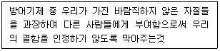
- 부인
- 투사
- 전위
- 주지화
(정답률: 84%)
5. 다음 설명으로 해당하는 것은?
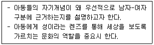
- 사회학습 이론
- 인지발달 이론
- 성 도식 이론
- 정신분석학 이론
(정답률: 88%)
6. 심리검사의 오차유형 중 측정 결과에 변화를 주는 것은?
- 해석적 오차
- 항상적 오차
- 외인적 오차
- 검사자 오차
(정답률: 49%)
7. 프로이트(S. Freud)의 성격 구조에 관한 설명으로 옳은 것은?
- 자아는 현실원리를 따르며 개인이 현실에 적응하도록 돕는다.
- 자아는 일차적 사고과정을 따른다.
- 자아는 자아이상과 양심으로 구성되어 있다.
- 초자아는 성적욕구와 관련된 것으로 쾌락의 원리를 따른다.
(정답률: 86%)
8. 검사에 포함된 각 질문 또는 문항들이 동일한 것을 측정하는 정도를 나타내는 것은?
- 내적일치도
- 경험타당도
- 구성타당도
- 준거타당도
(정답률: 70%)
9. 성격과 환경간의 상호작용 중 개인의 성격은 타인으로부터 독특한 반응을 이끌어낸다는 것은?
- 유도적 상호작용
- 반응적 상호작용
- 주도적 상호작용
- 조건적 상호작용
(정답률: 49%)
10. 캘리(Kelly)의 개인적 구성개념이론에 관한 설명으로 옳지 않은 것은?
- 성격 연구의 목적은 개인이 자신과 자신의 사회적 세상을 해석하는데 사용하는 차원을 찾는 것이어야 한다.
- 개개인을 직관적으로 과학자로 보아야 한다.
- 특질검사는 개인의 구성개념을 측정하기에 가장 적합하다.
- 구성개념의 대조 쌍은 논리적으로 반대일 필요가 없다.
(정답률: 43%)
11. 성격의 정의에 관한 설명으로 틀린 것은?
- 성격에는 개인이 가지고 있는 고유하고 독특한 성질이 포함된다.
- 개인의 독특성은 시간이 지나도 비교적 안정적으로 변함없이 일관성을 지닌다.
- 성격은 다른 사람이나 환경과 상호작용하는 관계에서 행동양식을 통해 드러난다.
- 성격은 타고난 것으로 개인이 속한 가정과 사회적 환경에 영향을 받지 않는다.
(정답률: 92%)
12. 단기기억의 특성이 아닌 것은?
- 정보의 용량이 매우 제한적이다.
- 작업기억(working memory)이라 불린다.
- 현재 의식하고 있는 정보를 의미한다.
- 거대한 도서관에 비유할 수 있다.
(정답률: 89%)
13. 사람들이 자기 자신의 행동을 설명할 때 현저한 상황적 원인들은 지나치게 강조하고 사적인 원인들은 미흡하게 강조하는 것은?
- 사회억제 효과
- 과잉정당화 효과
- 인지부조화 효과
- 책임감 분산 효과
(정답률: 73%)
14. 연구방법의 주요 개념에 관한 설명으로 옳지 않은 것은?
- 측정 : 한 변인의 여러 값들에 숫자를 할당하는 체계
- 실험 : 원인과 결과에 대한 가설을 정밀하게 검사하는 것
- 실험집단 : 가설의 원인이 제공되지 않는 집단
- 독립변인 : 실험자에 의해 정밀하게 통제되는 가설의 원인으로서 참가자의 과제와 무관한 변인
(정답률: 72%)
15. 사랑의 삼각형 이론에서 사랑의 3가지 요소에 포함되지 않는 것은?
- 관심(Attention)
- 친밀감(Intimacy)
- 열정(Passion)
- 투신(Commitment)
(정답률: 43%)
16. 사람들은 혼자 있을 때보다 자신과 같은 일을 수행하고 있는 다른 사람들이 있을 때 수행이 향상된다는 것을 지칭하는 것은?
- 동조효과
- 방관자효과
- 사회촉진
- 사회태만
(정답률: 77%)
17. 다음의 설명에 해당하는 것은?
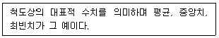
- 빈도분포값
- 추리통계값
- 집중경향값
- 변산측정값
(정답률: 76%)
18. 기억에 정보를 저장하기 위해서 환경의 물리적 정보의 속성을 기억에 저장할 수 있는 속성으로 변화시키는 과정은?
- 주의과정
- 각성과정
- 부호화과정
- 인출과정
(정답률: 88%)
19. 통계분석에 관한 설명으로 옳지 않은 것은?
- 2개의 모평균 간에 차이가 있는지를 검정하기 위해서 중다회귀분석(multiple regression analysis)을 이용한다.
- 3개 또는 그 이상의 평균치 사이에 차이가 있는지를 검정하기 위해서 분선분석을 사용한다.
- 빈도 차이의 유의성을 검증하기 위해서 χ2검정을 사용한다.
- 피어슨 상관계수 r은 근본적으로 관련성을 보여주는 지표이지 어떠한 인과적 요인을 밝혀주지는 않는다.
(정답률: 51%)
20. 소거(extinction)가 영구적인 망각이 아니라는 증거가 될 수 있는 것은?
- 변별
- 조형
- 자극 일반화
- 자발적 회복
(정답률: 81%)
2과목: 이상심리학
21. 이상행동의 분류와 평가에 관한 설명으로 옳지 않은 것은?
- 범주적 분류는 이상행동이 정상행동과는 질적으로 구분되며 흔히 독특한 원인에 의한 것이기 때문에 정상행동과는 명료한 차이점을 지니고 있다는 가정에 근거한다.
- 차원적 분류는 정상행동과 이상행동의 구분이 부적응성 정도의 문제일 뿐 질적인 차이는 없다는 가정에 근거한다.
- 타당도는 한 분류체계를 적용하여 환자들의 증상이나 장애를 평가했을 때 동일한 결과가 도출되는 정도를 의미한다.
- 같은 장애로 진단된 사람들에게서 동일한 원인적 요인들이 발전되는 정도는 원인론적 타당도이다.
(정답률: 54%)
22. 조현병의 양성증상에 해당하는 것은?
- 무의욕증
- 무사회증
- 와해된 행동
- 감퇴된 정서 표현
(정답률: 78%)
23. 물질관련장애에 관한 설명으로 옳지 않은 것은?
- 물질에 대한 생리적 의존은 내성과 금단증상으로 나타난다.
- 임신 중의 과도한 음주는 태아알코올증후군을 유발할 수 있다.
- 모르핀과 헤로인은 자극제(흥분제)의 대표적 종류이다.
- 헤로인의 과다 복용은 뇌의 호흡 중추를 막아 죽음에 이르게 할 수 있다.
(정답률: 73%)
24. 조현병 스펙트럼 및 기타 정신병적장애에 해당하지 않는 것은?
- 망상장애
- 순환성장애
- 조현양상장애
- 단기 정신병적 장애
(정답률: 77%)
25. 반사회성 성격장애와 가장 관련이 없는 것은?
- 품행장애의 과거력
- 역기능적 양육환경
- 붕괴된 자아와 강한 도덕성 발달
- 신경전달물질인 세로토닌(SErotonin)의 부족
(정답률: 64%)
26. DSM-5에 의한 성격장애의 분류로 옳지 않은 것은?(문제 오류로 가답안 발표시 2번으로 발표되었지만 확정답안 발표시 1, 2번이 정답처리 되었습니다. 여기서는 가답안인 2번을 누르시면 정답 처리 됩니다.)
- A군 성격장애 : 조현성 성격장애
- C군 성격장애 : 편집성 성격장애
- B군 성격장애 : 연극성 성격장애
- C군 성격장애 : 회피성 성격장애
(정답률: 83%)
27. 노출장애에 관한 설명과 가장 거리가 먼 것은?
- 성도착적 초점은 낯선 사람에게 성기를 노출시키는 것이다.
- 성기를 노출시켰다는 상상을 하면서 자위행위를 하기도 한다.
- 청소년기나 성인기 초기에 시작되는 것으로 알려져 있다.
- 노출 대상은 사춘기 이전의 아동에게 국한된다.
(정답률: 85%)
28. DSM-5의 신경발달장애에 해당하지 않는 것은?
- 지적장애
- 분리불안장애
- 자폐스펙트럼장애
- 주의력결핍 과잉행동장애
(정답률: 75%)
29. 스트레스 호르몬이라고 불리는 코티솔(cortisol)이 분비되는 곳은?
- 부신
- 변연계
- 해마
- 대뇌피질
(정답률: 68%)
30. 강박장애를 가진 내담자의 심리치료에 가장 효과적인 방법은?
- 행동조형
- 자유연상법
- 노출 및 반응 방지법
- 혐오조건화
(정답률: 74%)
31. 우울장애에 대한 치료방법으로 적절하지 않은 것은?
- 대인관계치료(interpersonal psychotherapy)
- 기억회복치료(memory recovery therapy)
- 인지행동치료(cognitive behavioral therapy)
- 단기정신역동치료(brief psychodynamic therapy)
(정답률: 71%)
32. 알코올 사용장애에 관한 설명으로 옳은 것은?
- 가족력이나 유전과는 관련성이 거의 없다.
- 성인 여자가 성인 남자보다 유병률이 높다.
- 자살, 사고, 폭력과의 관련성이 거의 없다.
- 금단 증상의 불쾌한 경험을 피하거나 경감시키기 위해 음주를 지속하게 된다.
(정답률: 79%)
33. 파괴적, 충동조절 및 품행장애에 관한 설명으로 옳지 않은 것은?
- 병적 방화의 필수 증상은 고의적이고 목적이 있는, 수차례의 방화 삽화가 존재하는 것이다.
- 품행장애의 유병률은 아동기에서 청소년기로 갈수록 증가한다.
- 병적 도벽은 보통 도둑질을 미리 계획하지 않고 행한다.
- 간헐적 폭발성 장애는 언어적 공격과 신체적 공격을 모두 포함해야 한다.
(정답률: 53%)
34. 양극성장애(Bipolar disorder) 조증시기에 있는 환자의 방어적 대응양상을 판단할 수 있는 행동이 아닌 것은?
- 화장을 진하게 하고 다닌다.
- 자신이 신의 사자라고 이야기 한다.
- 증거도 없는 행동을 두고 남을 탓한다.
- 활동 의욕은 줄어들어 과다 수면을 취한다.
(정답률: 78%)
35. DSM-5에 제시된 신경인지장애의 병인에 해당하지 않는 것은?
- 알츠하이머병
- 레트
- 루이소체
- 파킨슨병
(정답률: 57%)
36. 아동 A에게 진단할 수 있는 가장 가능성이 높은 장애는?
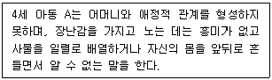
- 자폐 스펙트럼장애
- 의사소통장애
- 틱 장애
- 특정학습장애
(정답률: 84%)
37. 치매에 관한 설명으로 가장 적합한 것은?
- 기억손실이 없다.
- 약물남용의 가능성이 많다.
- 증상은 오전에 가장 심해진다.
- 자신의 무능을 최소화하거나 자각하지 못한다.
(정답률: 75%)
38. 공황장애의 특징에 해당하는 것을 모두 고른 것은?
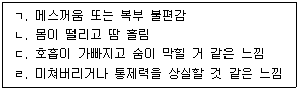
- ㄷ, ㄹ
- ㄱ, ㄴ, ㄹ
- ㄴ, ㄷ, ㄹ
- ㄱ, ㄴ, ㄷ, ㄹ
(정답률: 78%)
39. 해리장애에 대한 설명으로 적절하지 않은 것은?
- 해리 현상에 영향을 주는 주된 요인으로 학대받은 개인경험, 고통스러운 상태로부터의 도피 등이 있다.
- 해리 현상을 유발하는 가장 주된 방어기제는 투사로 알려져 있다.
- 해리성 둔주는 정체감과 과거를 망각할 뿐만 아니라 완전히 다른 장소로 이동한다.
- 해리성 기억상실증은 중요한 자서전적 정보를 회상하지 못하는 것으로, 해리성 둔주가 나타날 수 있다.
(정답률: 76%)
40. 주요우울장애 환자가 일반적으로 나타내는 특징적 증상이 아닌 것은?
- 거절에 대한 두려움
- 불면 혹은 과다수면
- 정신운동성 초조
- 일상활동에서의 흥미와 즐거움의 상실
(정답률: 63%)
3과목: 심리검사
41. 신경심리학적 능력 중 BGT 및 DAP, 시계 그리기를 통해 가장 효과적으로 평가할 수 있는 것은?
- 주의 능력
- 기억 능력
- 실행 능력
- 시공간 구성 능력
(정답률: 64%)
42. 신경심리검사에 대한 설명으로 옳은 것은?
- Broca와 Wernicke는 실허증 연구에 뛰어난 업적을 남겼으며, Benton은 임상신경 심리학의 창시자라고 할 수 있다.
- X레이, MRI 등 의료적 검사결과가 정상으로 나온 경우에는 신경심리검사보다는 의료적 검사결과를 신뢰하는 것이 타당하다.
- 신경심리검사는 고정식(fixed) battery와 융통식(flexible) battery 접근이 있는데, 두 가지 접근 모두 하위검사들이 독립적인 검사들은 아니다.
- 신경심리검사는 환자에 대한 진단 환자의 강점과 약점, 향후 직업능력의 판단, 치료계획, 법의학적 판단, 연구 등에 널리 활용된다.
(정답률: 73%)
43. 심리검사자가 준수해야 할 윤리적 의무로 옳은 것을 모두 고른 것은?
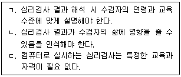
- ㄱ
- ㄱ, ㄴ
- ㄴ, ㄷ
- ㄱ, ㄴ, ㄷ
(정답률: 81%)
44. 표집 시 남녀 비율을 정해놓고 표집해야 하는 경우에 가장 적합한 방법은?
- 군집표집(cluster sampling)
- 유층표집(stratified sampling)
- 체계적표집(systematic sampling)
- 구체적 표집(specific sampling)
(정답률: 54%)
45. MMPI-2의 각 척도에 대한 해석으로 가장 적합한 것은?
- 6번 척도가 60T 내외로 약간 상승한 것은 대인관계 민감성에 대한 경험을 나타낸다.
- 2번 척도는 반응성 우울증보다는 내인성 우울증과 관련이 높다.
- 4번 척도의 상승 시 심리치료 동기가 높고 치료의 예휴가 좋음을 나타낸다.
- 7번 척도는 불안 가운데 상태불안 증상과 연관성이 높다.
(정답률: 42%)
46. 웩슬러 지능검사의 하위지수 중 지적 장애를 가진 사람들의 어려움을 겪는 것으로 알려진 소검사자들을 가장 많이 포함하고 있는 것은?
- 언어이해
- 지각추론
- 작업기억
- 처리속도
(정답률: 43%)
47. Guilford의 지능구조 입체모형에서 조작(operation) 요인에 해당하는 것은?
- 표정, 동작 등의 행동적 정보
- 사고결과의 적절성을 판단하는 평가
- 의미 있는 단어나 개념의 의미적 정보
- 어떤 정보에서 생기는 예상이나 기대들의 합
(정답률: 38%)
48. 지능검사를 해석할 때 고려사항으로 옳지 않은 것은?
- 작업기억과 처리속도는 상황적 요인에 민감한 지수임을 감안한다.
- 지수점수를 해석할 때 여러 지수들 간에 점수 차이가 유의한지를 살펴봐야 한다.
- 지수가 유의한 차이가 있을 경우 전체척도 IQ는 해석하기가 용이하다.
- 지수 점수간의 비교를 통해 상대적 약점이 문제의 원인이 될 수 있는지 확인한다.
(정답률: 70%)
49. 다음 MMPI-2 프로파일과 가장 관련이 있는 진단은?
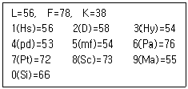
- 품행장애
- 우울증
- 전환장애
- 조현병
(정답률: 70%)
50. BSID-Ⅱ(Bayley Scale of Infant Development-Ⅱ)에 대한 설명으로 틀린 것은?
- 신뢰도와 타당도에 관한 보다 많은 정보를 제공하여 검사의 심리측정학적 질이 개선되었다.
- 유아의 기억, 습관화, 시각선호도, 문제해결 등과 관련된 문항들이 추가되었다.
- BSID-Ⅱ에서는 대상 연령범위가 16일에서 42개월까지로 확대되었다.
- 지능척도, 운동척도의 2가지 척도로 구성되어 있다.
(정답률: 58%)
51. 성격을 측정하는 자기보고 검사에 관한 설명으로 옳은 것은?
- 개인의 심층적인 내면을 탐색하는데 흔히 사용된다.
- 응답결과는 개인의 반응경향성과 무관하다.
- 강제선택형 문항은 개인의 묵종 경향성을 예방하는데 효과적이다.
- 사회적으로 바람직하게 응답하려는 경향을 나타내기 쉽다.
(정답률: 70%)
52. 80세 이상의 노인집단용 규준이 마련되어 있는 심리검사는?
- MMPI-A
- K-WISC-Ⅳ
- K-Vineland-Ⅱ
- SMS(Social Maturity Scale)
(정답률: 64%)
53. Rorschach 검사에서 반응의 결정인 중 인간운동반응(M)에 대한 설명으로 옳지 않은 것은?
- M 반응이 많은 사람은 행동이 안정되어 있고 능력이 뛰어남을 나타낸다.
- M 반응이 많을수록 그 사람은 그의 세계의 지각을 풍부하게 만들기 위해 자유롭게 구사할 수 있는 상상력을 지니고 있다.
- 상쾌한 기분은 M 반응의 수를 증가시킨다.
- 좋은 형태의 수준을 가진 M의 출현은 높은 지능의 존재를 부정하는 것이며 가능한 M이 많이 나타난다는 사실은 낮은 지능을 의미한다.
(정답률: 72%)
54. MMPI-2의 자아강도 척도(ego strength scale)에 관한 설명으로 틀린 것은?
- 정신치료의 성공여부를 예측하기 위해 고안되었다.
- 개인의 전반적인 기능수준과 상관이 있다.
- 효율적인 기능과 스트레스를 견디는 능력을 반영한다.
- F 척도가 높을수록 자아 강도 척도의 점수는 높아진다.
(정답률: 76%)
55. MMPI-2 검사를 실시할 때 고려해야 할 사항으로 옳지 않은 것은?
- 검사의 목적과 결과의 비밀보장에 대해 설명한다.
- 검사 결과는 환자와 치료자에게 중요한 자료가 됨을 강조할 필요가 있다.
- 수검자들이 피로해있지 않는 시간대를 선택한다.
- 수검자의 독해력은 중요하지 않다.
(정답률: 85%)
56. 신경심리검사의 실시에 대한 설명으로 옳은 것은?
- 두부 외상이나 뇌졸중 환자의 경우에는 급성기에 바로 검사를 실시하는 것이 바람직히다.
- 어려운 검사는 피로가 적은 상태에서 실시하고 어려운 검사와 쉬운 검사를 교대로 실시하는 것이 좋다.
- 운동 기능을 측정하는 검사는 과제제시와 검사 사이에 간섭과제를 사용한다.
- 진행성 뇌질환의 경우 6개월 정도가 지난 후에 정신상태와 인지기능을 평가하는 것이 바람직하다.
(정답률: 69%)
57. 타당도에 관한 설명으로 틀린 것은?
- 준거타당도는 검사점수와 외부 측정에서 얻은 일련의 수행을 비교함으로써 결정된다.
- 준거타당도는 경험타당도 또는 예언타당도라고 불리기도 한다.
- 구성타당도는 측정될 구성개념에 대한 평가도구의 대표성과 적합성을 말한다.
- 구성타당도는 내용 및 준거타당도 접근법에서 직면하게 될 부적합성 및 문제점을 해결하기 위해 개발되었다.
(정답률: 27%)
58. 지능을 구성하는 요인에 관한 Cattell과 Horn의 이론 중 결정화된 지능(crystallized intelligence)에 관한 설명으로 옳은 것은?
- 비언어적 요인과 관련된 능력을 말한다.
- 후천적이기 보다는 선천적으로 이미 결정화된 지능의 측면을 말한다.
- 나이가 늘어감에 따라 낮아진다.
- 문화적 요인에 의해 더 많은 영향을 받는다.
(정답률: 55%)
59. 적성검사에 관한 설명으로 옳지 않은 것은?
- 개인의 특수한 영역에서의 능력을 측정한다.
- 적성검사는 능력검사로 불리기도 한다.
- 적성검사는 개인의 미래수행을 예측하는데 사용된다.
- 학업적성은 실제 학업성취도와 일치한다.
(정답률: 70%)
60. K-WISC-Ⅳ에서 인지효능지표에 포함되는 소검사가 아닌 것은?
- 숫자
- 행렬 추리
- 기호쓰기
- 순차연결
(정답률: 33%)
4과목: 임상심리학
61. 강제입원, 아동 양육권, 여성에 대한 폭력, 배심원 선정 등의 문제에 특히 관심을 가지는 심리학 영역은?
- 아동임상심리학
- 임상건강심리학
- 법정심리학
- 행동의학
(정답률: 79%)
62. MMPI-2의 타당도 척도 중 부정 왜곡을 통해 극단적인 수준으로 정신병적 문제가 있음을 나타내려는 경우에 상승되는 것은?
- S scale
- F(P) scale
- TRIN scale
- VRIN scale
(정답률: 67%)
63. 역할-연기에 대한 설명과 가장 거리가 먼 것은?
- 주장 훈련과 관련이 있다.
- 사회적 기술을 포함하고 있다.
- 행동시연을 해야 한다.
- 이완 훈련을 해야 한다.
(정답률: 75%)
64. 미국에서 임상심리학이 비약적으로 발전하게 된 계기가 된 것은?
- 자원봉사자들의 활동
- 루스벨트 대통령의 후원
- 제2차 세계대전
- 매카시즘의 등장
(정답률: 82%)
65. 임상심리사로서 전문적인 관계를 유지하는데 바람직한 지침사항과 가장 거리가 먼 것은?
- 다른 전문직에 종사하는 동료들의 욕구, 특수한 능력, 그리고 의무에 대하여 적절한 관심을 가져야 한다.
- 동료 전문가와 관련된 단체나 조직의 특권 및 의무를 존중하여 행동하여야 한다.
- 소비자의 최대이익에 기여하는 모든 자원들을 활용해야 한다.
- 동료 전문가의 윤리적 위반가능성을 인지하면 즉시 해당 전문가 단체에 고지해야 한다.
(정답률: 50%)
66. 시각적 처리와 시각적으로 중재된 기억의 일부 측면에 관여하는 뇌의 위치는?
- 두정엽
- 후두엽
- 전두엽
- 측두엽
(정답률: 55%)
67. 불안에 관한 노출치료의 내용과 가장 거리가 먼 것은?
- 노출은 불안을 더 일으키는 자극에서 낮은 불안을 일으키는 자극 순으로 진행되어야 한다.
- 노출은 공포, 불안이 제거될 때까지 반복되어야 한다.
- 노출은 불안을 유발해야 한다.
- 환자는 될 수 있는 한 공포스러운 자극에 주의를 기울이고 그 자극과 관계를 맺도록 노력해야 한다.
(정답률: 74%)
68. 다음의 설명에 해당하는 것은?
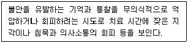
- 합리화
- 전이
- 저항
- 투사
(정답률: 76%)
69. 행동평가에 관한 설명으로 가장 적합한 것은?
- 자연적인 상황에서 실제 발생한 것만을 대상으로 평가한다.
- 행동표본은 내면심리를 반영한 것으로 해석된다.
- 특정 표적행동의 조작적 정의가 상이할 수 있음을 고려해야 한다.
- 관찰 결과는 요구특성이나 피험자의 반응성 요인과는 무관하다.
(정답률: 54%)
70. 문장완성검사에 관한 설명으로 틀린 것은?
- 수검자의 자기개념, 가족관계 등을 파악할 수 있다.
- 수검자가 검사자극의 내용을 감지할 수 없도록 구성되어 있다.
- 수검자에 따라 각 문항의 모호함을 정도는 달라질 수 있다.
- 개인과 집단 모두에게 실시될 수 있다.
(정답률: 72%)
71. 심리치료 이론 중 전이와 역전이의 중요성을 강조하고 치료에 활용하는 접근은?
- 정신분석적 접근
- 행동주의적 접근
- 인본주의적 접근
- 게슈탈트적 접근
(정답률: 75%)
72. 인간중심치료에 대한 설명으로 적합하지 않은 것은?
- 인간중심접근은 개인의 독립과 통합을 목표로 삼는다.
- 인간 중심적 상담(치료)은 치료과정과 결과에 대한 연구관심사를 포괄하면서 개발되었다.
- 치료자는 주로 내담자의 자기와 세계에 대한 인식에 주로 관심을 가진다.
- 내담자가 정상인인가, 신경증 환자인가, 정신병 환자인가에 따라 각기 다른 치료원리가 적용된다.
(정답률: 75%)
73. 임상심리사가 수행하는 역할과 가장 거리가 먼 것은?
- 심리치료상담
- 심리검사
- 언어치료
- 심리재활
(정답률: 72%)
74. 다음에 해당하는 관찰법은?
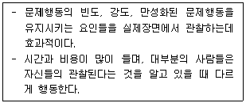
- 자연 관찰법
- 통제된 관찰법
- 자기 관찰법
- 연합 관찰법
(정답률: 61%)
75. 다음에 해당하는 자문의 유형은?
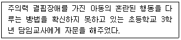
- 내담자 중심 사례 자문
- 프로그램 중심 행정 자문
- 피자문자 중심 사례 자문
- 자문자 중심 행정 자문
(정답률: 58%)
76. 합동가족치료에 대한 설명으로 틀린 것은?
- 비행 청소년들과 그들의 가족들을 위한 개입법으로 개발되었다.
- 한 치료자가 가족전체를 동시에 본다.
- 치료자는 상황에 따라 비지시적인 역할을 할 수 있다.
- 치료자는 가족 구성원에게 과제를 준다.
(정답률: 37%)
77. Rogers가 제안한 내담자의 긍정적 변화를 촉진시키기 위한 치료자의 3자기 조건에 해당하지 않는 것은?
- 무조건적 존중
- 정확한 공감
- 창의성
- 솔직성
(정답률: 83%)
78. 접수면접의 목적에 대한 설명으로 가장 적합한 것은?
- 환자의 심리적 기능 수준과 망상, 섬망 또는 치매와 같은 이상 정신현상의 유무를 선별하기 위해 실시한다.
- 가장 적절한 치료나 중재 계획을 권고하고 환자의 증상이나 관심을 더 잘 이해하기 위해 실시한다.
- 환자가 중대하고 외상적이거나 생명을 위협하는 위기에 있을 때 그 상황에서 구해내기 위해서 실시한다.
- 환자가 보고하는 증상들과 문제들을 진단으로 분류하기 위해서 실시한다.
(정답률: 59%)
79. 불안장애를 지닌 내담자에게 적용한 체계적 둔갑법의 단계를 바르게 나열한 것은?
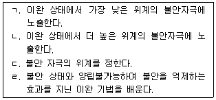
- ㄱ → ㄴ → ㄷ → ㄹ
- ㄷ → ㄱ → ㄴ → ㄹ
- ㄷ → ㄹ → ㄱ → ㄴ
- ㄹ → ㄱ → ㄴ → ㄷ
(정답률: 71%)
80. 평가면접에서 면접자의 태도에 대한 설명으로 틀린 것은?
- 수용 : 내담자의 가치에 대한 기본적인 존중과 관련되어 있다.
- 해석 : 면접자가 자신의 내면과 부합하는 심상을 수용하는 것과 관련되어 있다.
- 이해 : 내담자의 관점에서 세계를 보기 위한 노력과 관련되어 있다.
- 진실성 : 면접자의 내면과 부합하는 것을 전달하는 정도와 관련되어 있다.
(정답률: 61%)
5과목: 심리상담
81. 다음 사례에서 사용된 행동주의 상담기법은?
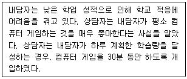
- 자기교수훈련, 정적강화
- 프리맥의 원리, 정적강화
- 체계적 둔감법, 자기교수훈련
- 자극통제, 부적강화
(정답률: 57%)
82. 보딘(Bordin)이 제시한 작업동맹(working alliance)의 3가지 측면이 옳은 것은?
- 작업의 동의, 진솔한 관계, 유대관계
- 진솔한 관계, 유대관계, 서로에 대한 호감
- 유대관계, 작업의 동의, 목표에 대한 동의
- 서로에 대한 호감, 동맹, 작업의 동의
(정답률: 57%)
83. 인간중심상담에 관한 설명으로 옳지 않은 것은?
- 모든 인간에게 실현경향성이 있다고 보는 긍정적 인간관을 지닌다.
- 이상적 자기와 현실적 자기 간의 괴리가 큰 경우 심리적 부적응이 발생한다고 본다.
- 상담자가 내담자에 대해 무조건적 긍정적 존중의 태도를 지니는 것을 강조한다.
- 아동은 부모의 기대와 가치를 내면화하여 현실적인 자기를 형성한다.
(정답률: 68%)
84. 정신분석적 상담기법 중 상담진행을 방해하고 현재 상태를 유지하려는 의식적, 무의식적 생각, 태도, 감정, 행동을 의미하는 것은?
- 전이
- 저항
- 해석
- 훈습
(정답률: 78%)
85. Krumboltz가 제시한 상담의 목표에 해당하지 않는 것은?
- 내담자가 요구하는 목표이어야 한다.
- 상담자의 도움을 통해 내담자가 달성할 수 있는 목표이어야 한다.
- 내담자가 상담목표 성취의 정도를 평가할 수 있어야 한다.
- 모든 내담자에게 동일하게 적용될 수 있는 목표이어야 한다.
(정답률: 77%)
86. 상담 진행과정에 관한 설명으로 옳지 않은 것은?
- 초기 : 비자발적 내담자의 경우 상담목표를 설정하지 않음
- 중기 : 내담자가 자신의 문제를 이해하고 반복적인 학습이 일어남
- 중기 : 문제 해결 과정에서 저항이 나타날 수 있음
- 종결기 : 상담 목표를 기준으로 상담성과를 평가함
(정답률: 70%)
87. 글래서(Glasser)의 현실치료 이론에서 가정하는 기본적인 욕구가 아닌 것은?
- 생존의 욕구
- 권력의 욕구
- 자존감의 욕구
- 재미에 대한 욕구
(정답률: 45%)
88. 내담자의 현재 상황에서의 욕구와 체험하는 감정의 자각을 중요시하는 상담이론은?
- 인간중심 상담
- 게슈탈트 상담
- 교류분석 상담
- 현실치료 상담
(정답률: 53%)
89. 위기개입전력으로 옳지 않은 것은?
- 내담자의 즉각적인 욕구에 주목한다.
- 내담자와 진실한 관계를 형성하는 것이 중요하다.
- 위기개입 시 현재 상황과 관련된 과거에 초점을 맞춘다.
- 각각의 내담자와 위기를 독특한 것으로 보고 반응한다.
(정답률: 67%)
90. 도박중독의 심리·사회적 특징에 대한 설명으로 옳은 것은?
- 도박 중독자들은 대체로 도박에만 집착할 뿐 다른 개인적인 문제를 가지지 않는다.
- 도박 중독자들은 직장에서 도박 자금을 마련하기 위해 남보다 더 열심히 노력한다.
- 심리적 특징으로 단기적인 만족을 추구하기 보다는 장기적인 만족을 추구한다.
- 도박행동에 문제가 있음을 인정하지 않고 변명하려 든다.
(정답률: 75%)
91. 학업상담의 특징에 관한 설명으로 틀린 것은?
- 비자발적 내담자가 많다.
- 부모의 관여가 적절한 수준과 형태로 이루어지도록 돕는다.
- 학습의 영역에서 문제가 발생하였으므로 문제의 원인은 인지적인 것이다.
- 학습과정에서 겪는 문제를 통합적으로 해결하여 유능한 학습자가 되도록 조력하는 과정이다.
(정답률: 78%)
92. 상담자의 윤리의 관한 설명으로 틀린 것은?
- 비밀보장은 상담진행 과정 중 가장 근복적인 윤리기준이다.
- 내담자의 윤리는 개인 상담뿐만 아니라 집단상담이나 가족상담에서도 고려되어야 한다.
- 상담여부를 결정하는 것을 내담자이며 상담자는 내담자에게 정확한 정보를 제공해야 한다.
- 상담이론과 기법은 반복적으로 검증된 것이므로 시대 및 사회여건과 무관하게 적용해야 한다.
(정답률: 81%)
93. 성희롱 피해 경험으로 인해 분노, 불안, 수치심을 느끼고 대인관계를 기피하는 내담자에 대한 초기 상담 개입 전략으로 옳지 않은 것은?
- 분노상황을 탐색하고 호소 문제를 구체화한다.
- 불안감소를 위해 이완 기법을 실시한다.
- 수치심과 관련된 감정을 반영해 준다.
- 대인관계 문제 해결을 위해 가해자에 대한 공감 훈련을 한다.
(정답률: 69%)
94. 청소년 비행의 원인을 사회학적 관점에서 설명하는 이론이 아닌 것은?
- 아노미이론
- 사회통제이론
- 욕구실현이론
- 하위문화이론
(정답률: 61%)
95. 교류분석에서 치료의 바람직한 목표인 치유의 4단계에 해당되지 않는 것은?
- 계약의 설정
- 증상의 경감
- 전이의 치유
- 각본의 치유
(정답률: 41%)
96. 진로상담에서 진로 미결정 내담자를 위한 개입방법과 비교하여 우유부단한 내담자에 대한 개입방법이 갖는 특징이 아닌 것은?
- 장기적인 계획 하에 상담해야 한다.
- 대인관계나 가족 문제에 대한 개입이 필요하다.
- 정보제공이나 진로선택에 관한 문제를 명료화하는 개입이 효과적이다.
- 문제의 기저에 있는 역동을 이해하고 감정을 반영하는 것이 효과적이다.
(정답률: 45%)
97. 다음에서 설명하는 용어로 옳은 것은?
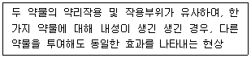
- 강화
- 남용
- 교차내성
- 공동의존
(정답률: 78%)
98. 심리학 지식을 상담이나 치료의 목적으로 활용하기 위해 최초의 심리클리닉을 펜실베니아 대학교에 설립한 사람은?
- 위트머(Witmer)
- 볼프(Wolpe)
- 스키너(Skinner)
- 로저스(Rogers)
(정답률: 59%)
99. Ellis의 ABCDE 모형에 관한 설명으로 옳은 것은?
- A : 문제 장면에 대한 내담자의 신념
- B : 선행사건
- C : 정서적·행동적 결과
- D : 새로운 감정과 행동
(정답률: 70%)
100. 다음 설명에 해당하는 기법은?
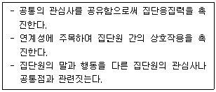
- 해석하기
- 연결하기
- 반영하기
- 명료화하기
(정답률: 77%)